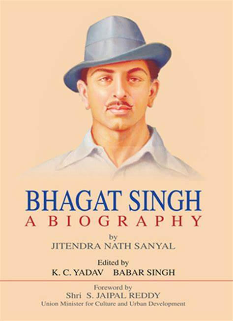
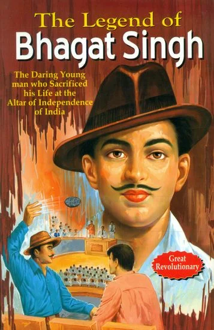
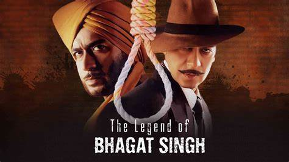
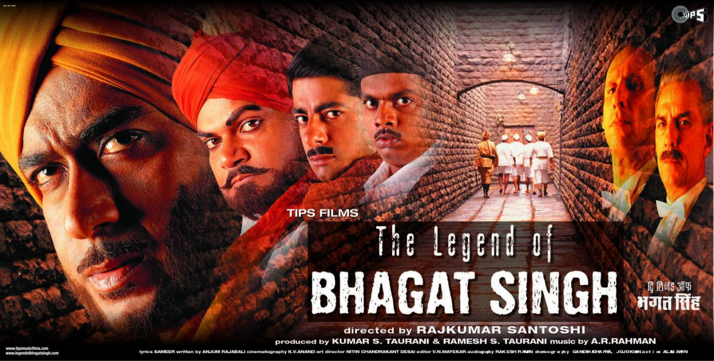

Bhagat Singh was born into a Punjabi Sikh family on 27 September 1907 in the village of Banga in the Lyallpur district of the Punjab in what was then British India and is today Pakistan; he was the second of seven children—four sons, and three daughters—born to Vidyavati and her husband Kishan Singh Sandhu. Bhagat Singh's father and his uncle Ajit Singh were active in progressive politics, taking part in the agitation around the Canal Colonization Bill in 1907, and later the Ghadar Movement of 1914–1915.
Killing of John Saunders: In 1928, the British government set up the Simon Commission to report on the political situation in India. Some Indian political parties boycotted the Commission because there were no Indians in its membership, and there were protests across the country. When the Commission visited Lahore on 30 October 1928, Lala Lajpat Rai led a march in protest against it. Police attempts to disperse the large crowd resulted in violence. The superintendent of police, James A. Scott, ordered the police to lathi charge (use batons against) the protesters and personally assaulted Rai, who was injured. Rai died of a heart attack on 17 November 1928.
Atheism: Singh began to question religious ideologies after witnessing the Hindu–Muslim riots that broke out after Gandhi disbanded the Non-Cooperation Movement. He did not understand how members of these two groups, initially united in fighting against the British, could be at each other's throats because of their religious differences
Communism: Singh regarded Kartar Singh Sarabha, the founding-member of the Ghadar Party as his hero. Bhagat was also inspired by Bhai Parmanand, another founding-member of the Ghadar Party. Singh was attracted to anarchism and communism. He was an avid reader of the teachings of Mikhail Bakunin and also read Karl Marx, Vladimir Lenin and Leon Trotsky. In his last testament, "To Young Political Workers", he declares his ideal as the "Social reconstruction on new, i.e., Marxist, basis"
Why I am an Atheist and Other Works
The Jail Notebook and Other Writings
Letter to Father
Jail Diary and Other Writings
 "Every tiny molecule of Ash is in motion with my heat I am such a Lunatic that I am free even in Jail."
"They may kill me, but they cannot kill my ideas. They can crush my body, but they will not be able to crush my spirit."/p>
Rang De Basanti (2006)
Shaheed-E-Azam (2002)
23rd March 1931: Shaheed (2002)
The Legend of Bhagat Singh (2002)
Shaheed (1965)
 Subhas Chandra Bose said that: "Bhagat Singh had become the symbol of the new awakening among the youths." Nehru acknowledged that Bhagat Singh's popularity was leading to a new national awakening, saying: "He was a clean fighter who faced his enemy in the open field ... he was like a spark that became a flame in a short time and spread from one end of the country to the other dispelling the prevailing darkness everywhere".[74] Four years after Singh's hanging, the Director of the Intelligence Bureau, Sir Horace Williamson, wrote: "His photograph was on sale in every city and township and for a time rivaled in popularity even that of Mr. Gandhi himself".
He became involved in numerous revolutionary activities. He quickly gained prominence in the Hindustan Republican Association (HRA) and became one of its chief leaders. Eventually, the name of the organization was changed to Hindustan Socialist Republican Association (HSRA) on 9 September 1928. A Commission known as Simon Commission was appointed by the British Government to look after the administration of India for further political reforms. The commission which reached India on 3 February 1928 decided to tour the whole India to gain the first hand information of the adminstrative system.